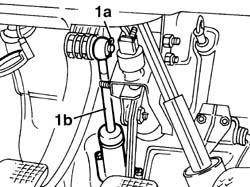
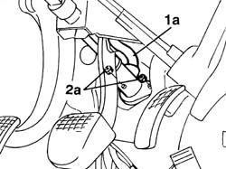
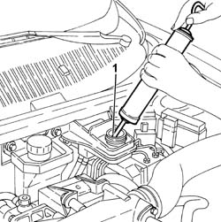
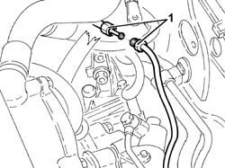
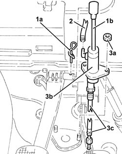
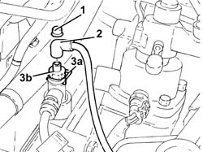
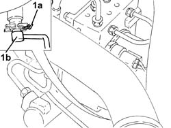
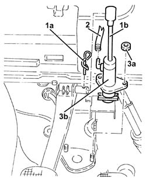

1820B20 (Pump) - MASTER CYLINDER R.R.
- Path
- Procedures > 18 CLUTCH > 1820 CLUTCH RELEASE CONTROLS > 1820B HYDRAULIC CLUTCH SYSTEM > 1820B20 (Pump) - MASTER CYLINDER R.R.
- Kind
- repair procedure (removal / refitting; the operation number is the code)
- Applies to
- engines: 1.6 TS , 1.8 TS, 2.0 JTS, 2.5 V6, 1.9 JTD 8v , 2.0 JTS, 2.4 JTD 10v, 2.4 JTD 20v; all production periods
- Interactive page
- https://sloeber94.github.io/elrnDB-a156/en/#/3237897
Applies to: engines: 1.6 TS , 1.8 TS, 2.0 JTS, 2.0 JTS; all production periods
 Removing
Removing
 Refitting
Refitting5530B52 Battery DRIP TRAY/SUPPORT - R.R.
Use a special syringe to suck out the clutch-brake fluid from the tank.
Disconnect the intermediate joint in the hose connecting master cylinder to vibration damper.
1. Disconnect master cylinder push rod (1b) from the clutch pedal after pulling out the splitter pin (1a).

Applies to: engines: 1.6 TS , 1.8 TS, 2.0 JTS, 2.0 JTS; all production periods
1. Disconnect the tank-master cylinder hose(1a) at the master cylinder end.
2. Loosen the locknuts (2a) fastening the master cylinder to the body and remove the cylinder complete with seal ring and delivery hose.

Applies to: engines: 1.6 TS , 1.8 TS, 2.0 JTS, 2.0 JTS; all production periods
Refitting
RemovingInstall master cylinder complete with seal ring and delivery hose; fasten to body with its locknuts.
Connect the tank-master cylinder hose to the master cylinder end.
Locate the master cylinder pushrod on the clutch pedal pin and stop it in position with the splitter pin.
Connect the intermediate joint in the master cylinder-vibration dumper hose, and tighten it ot the right torque.
 | Fastening | Component | Ø | Value (daNm) |
|---|---|---|---|---|
- | Connector | DELIVERY HOSE TO SLAVE CYLINDER | M12 | 1.7 - 1.9 |
1820B08 Clutch release HYDRAULIC SYSTEM - Bleeding air and restoring level
Applies to: engines: 2.5 V6, 1.9 JTD 8v , 2.4 JTD 10v; all production periods
Removing
Refitting5530B52 Battery DRIP TRAY/SUPPORT - R.R.
1. Drain the brake-clutch fluid from the reservoir using a suitable syringe.

Applies to: engines: 2.5 V6, 1.9 JTD 8v , 2.4 JTD 10v; all production periods
1. Disconnect the intermediate connection for the pipe from the master cylinder to the vibration damper.

Applies to: engines: 2.5 V6, 1.9 JTD 8v , 2.4 JTD 10v; all production periods
1. Remove the split pin (1a) and disconnect the master cylinder rod (1b) from the clutch pedal.
2. Disconnect the hose from the clutch reservoir to the master cylinder on the master cylinder side.
3. Undo the nuts (3a) and remove the master cylinder (3b) complete with O-Ring and supply pipe (3c).

Applies to: engines: 2.5 V6, 1.9 JTD 8v , 2.4 JTD 10v; all production periods
Refitting
RemovingFit the master cylinder complete with O ring and supply pipe and secure with the nuts.
Connect the hose from the reservoir to the master cylinder on the master cylinder side.
Connect the master cylinder rod to the clutch pedal and secure it with its split pin.
Connect the intermediate connection for the pipe between the master cylinder and the vibration damper and tighten to the recommended torque.
| Fastening | Component | Ø | Value (daNm) |
|---|---|---|---|---|
- | Connector | DELIVERY HOSE TO SLAVE CYLINDER | M12 | 1.7 - 1.9 |
1820B08 Clutch release HYDRAULIC SYSTEM - Bleeding air and restoring level
Applies to: engines: 2.4 JTD 20v; all production periods
Removing
RefittingPosition the vehicle on the ramp
Proceed with removal 1016A10 sound-proofing cover - r + r
Proceed with removal 5530B10 battery - r+r
Proceed with removal - 5530B54 battery cover - r+r
Proceed with removal 7055B54 under-engine guard - r r
1. Remove the cap on the bleed valve.
2. Connect the collection system (pipe and reservoir) to the bleed valve on the hydraulic clutch actuator.
3. Lift the retaining clip (3a) and withdraw the bleed device (3b) as much as necessary.
Let the hydraulic clutch system drain completely.

Applies to: engines: 2.4 JTD 20v; all production periods
1. Raise retaining clip (2a) and disconnect the clutch hydraulic circuit vibration damper (1b), clutch master cylinder side.

Applies to: engines: 2.4 JTD 20v; all production periods
Remove the sound-proofing protection.
1. Remove the split pin (1a) and disconnect the master cylinder rod (1b) from the clutch pedal.
2. Disconnect the hose from the clutch reservoir to the master cylinder on the master cylinder side.
3. Undo the nuts (3a) and remove the master cylinder (3b).

Applies to: engines: 2.4 JTD 20v; all production periods
Refitting
RemovingPlace the clutch master cylinder back in its housing and fix it tightening the nuts to the recommended torque.
Connect the hose from the clutch reservoir to the master cylinder on the master cylinder side.
Connect the master cylinder rod to the clutch pedal and secure it with its split pin.
Place the rubber protection back in its housing.
Connect the clutch hydraulic circuit vibration damper, master cylinder side - and secure with the retaining clip.
Proceed with refitting - 0010T64 brake and or clutch fluid check level and top up as necessary
Proceed with refitting 0010T67 hydraulic clutch system bleed air
Proceed with refitting 7055B54 under-engine guard - r r
Proceed with refitting - 5530B54 battery cover - r+r
Proceed with refitting 5530B10 battery - r+r
Proceed with refitting 1016A10 sound-proofing cover - r + r
Remove the car from the ramps.
Topics linked from this page (6)
- 0010T67 hydraulic clutch system bleed air
- 1016A10 sound-proofing cover - r + r
- 1820B08 Clutch release HYDRAULIC SYSTEM - Bleeding air and restoring level
- 5530B10 battery - r+r
- 5530B52 Battery DRIP TRAY/SUPPORT - R.R.
- 7055B54 under-engine guard - r r